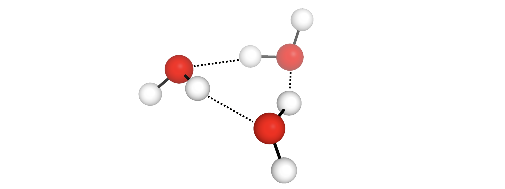

Non-covalent Interaction Complexes¶
autodE allows for the systematic search of a NCI complexes conformational space. For example, to find the lowest energy structure of the water trimer
from autode import Molecule, Config
from autode.species import NCIComplex
from autode.wrappers.XTB import xtb
Config.num_complex_sphere_points = 5
Config.num_complex_random_rotations = 3
# Make a water molecule and optimise at the XTB level
water = Molecule(name='water', smiles='O')
water.optimise(method=xtb)
# Make the NCI complex and find the lowest energy structure
trimer = NCIComplex(water, water, water, name='water_trimer')
trimer.find_lowest_energy_conformer(lmethod=xtb)
trimer.print_xyz_file()
Out (visualised)
